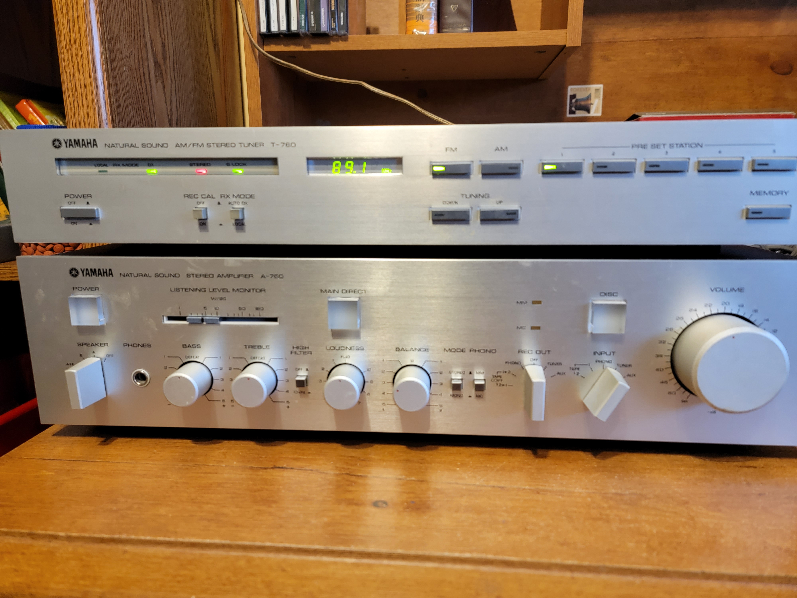

Yamaha A-760 Amplifier
Specifications1
- Power output: 80 watts per channel into 8Ω (stereo)
- Frequency response: 20Hz to 20kHz
- Total harmonic distortion: 0.01%
- Damping factor: 55
- Input sensitivity: 0.25mV (MC), 2.5mV (MM), 150mV (line)
- Signal to noise ratio: 76dB (MC), 98dB (MM), 103dB (line)
- Channel separation: 70dB (MM), 70dB (MC), 70dB (line)
- Output: 150mV (line)
- Semiconductors: 47 x transistors, 4 x IC, 8 x FET, 54 x diodes, 3 x LED
- Dimensions: 435 x 112 x 355mm
- Weight: 9.1kg

Yamaha T-760 Tuner
Specifications2
- Type: Mono/Stereo Tuner
- Tuning Bands: FM, MW
- Tuning Scale: Digital
- FM Tuning Range: 87.5 to 108 MHz
- MW Tuning Range: 525 to 1605 kHz
- Sensitivity: 1.2uV (FM), 15uV (MW)
- Signal to Noise Ratio: 73dB (FM), 46dB (MW)
- Distortion: 0.1% (FM), 0.5% (MW)
- Selectivity: 70dB (FM), 26dB (MW)
- Frequency response: 30Hz to 15kHz (FM)
- Output: 500mV (FM), 150mV (MW)
- Semiconductors: 40 x transistors, 10 x IC, 3 x FET, 21 x diodes, 14 x LED
- Dimensions: 435 x 72 x 262.5mm
- Weight: 3.1kg
Mission 717 Speakers
Description3
The 717 is a brand new addition to the Mission range, Here, the greatest challenge to our design team was to ensure a significant advance over the 700, which has presented genuine competition to many models costing substantially more. Mission 717’s will now set a completely new standard of quality in their price category and will be one of our most formidable products for the 1980’s. It offers a rare combination of accuracy, low colouration, high dynamic range, high efficiency and high power handling.
Specifications
- Type: 2 way, 2 driver loudspeaker system
- Frequency Response: 55Hz to 20kHz
- Recommended Amplifier: 15 to 100W
- Impedance: 8Ω
- Sensitivity: 92dB
- Bass: 1 x 210mm reinforced cone
- Tweeter: 1 x 25mm damped dome
- Enclosure: bass reflex
- Finish: walnut, black ash
- Dimensions: 515 x 277 x 270mm
- Weight: 8.5kg
Impressions
Clarity and spectrum of sound absent from modern day equipment.
Compared to Mission, other sound reproducing speakers sound somewhat muffled or aggregated over a certain frequency.
A permanent bias toward higher frequency on the graphic equalizer
Speaker Placement
- Right Speaker
66 inches off the ground
- Left Speaker
76 inches off the ground
- Space between speakers
70 inches
Listening Modes
Listen to FM Stations, some trouble locking in weaker stations.
Auto DX vs. Local seems to make no real difference Not sure about the function of REC CAL Could use MANUAL Tuning Mode, in case signals are weak.
This combo makes oldies station sound better than modern music stations.
Ride Like the Wind4 - Christopher Cross, highlights, or pushes to the front the smooth vocals of Cross and MacDonald.
ROCKIN’-in-the-USA, has a virtual drummer hidden between the speakers.